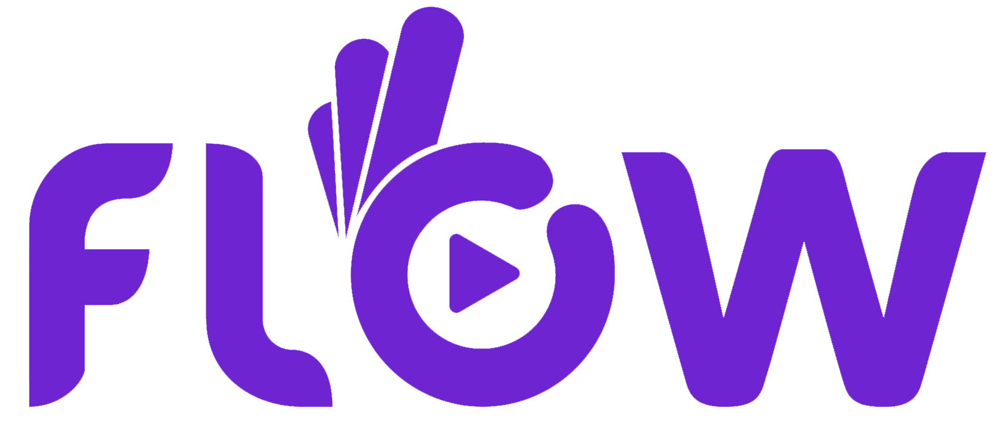

85% des métier de 2030 n'existent pas encore.
Apprendre tout au long de notre vie et de notre temps libre est devenu nécessaire pour nous tous. A l’occasion de séminaires mais aussi tous les jours dans le but d’apprendre. L’apprentissage en ligne d’aujourd’hui est très mauvaise.
En même temps de plus en plus de contenu de bonne qualité peut être accessible gratuitement en ligne. Et les gens les consomment : YouTube par exemple peut devenir la meilleure destination d’apprentissage pour des millions de gens.
Le seul problème avec cela est qu’il est difficile de savoir quoi apprendre, où trouver les meilleures sources de contenu et rester concentré. Flow est un guide contenant les ressources éducationnelles du monde et les talents pour éveiller l’appétit des gens pour l’apprentissage et les aider à déverrouiller leur potentiel.
Flow est une plateforme avec des vidéos, des podcasts et des articles tous extraits de sources sûres pour pleins de sujets différents que vous choisirez au préalable, en tant que « favoris » ; vous grandirez en culture générale.
Cette application vous forme dans différents domaines ; cela pourra également permettre aux entreprises de ne plus se soucier de votre formation.
Flow utilise des algorithmes basés sur l'Intelligence artificielle et les sciences cognitives pour adapter l'apprentissage à chacun et personnaliser le parcours de formation des collaborateurs en entreprise.
Vous pourrez partager ce dont vous avez « étudié », avec vos amis et comparer, vous conseiller, et vous aider les uns et les autres.
C'est comme le Facebook de l'apprentissage: on apprend et gagne en culture générale sans que cela soit agaçant, tout en partageant cela avec nos amis, et en l'observant grâce à des algorithmes.
Thibault de Saint Sernin:
- Co-founder
- CPO
Bertrand Bevillard:
- Co-founder
- CTO
Damien Passavent:
- Co-founder
- CEO
Hugo Richard:
- Co-founder
- Data